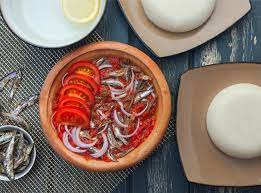

Akple with Abobitadi

Description
This is a recipe made undoubtedly better than no other country but Ghana
Ingredients
- Corn Flour
- Cassava Dough
- Abobi (Dried Anchovies)
- Tomatoes
- Scotch bonnet
- Onions
- Ginger
- Garlic
- Salt
Steps
Making of Akple
- Pour two cups of water into a clean cooking pot and place it on fire
- Wait for the water to boil and add a reasonable amount of salt
- Pour desired amount of the corn flour into the boiling water in bits to ensure there is consistency
- Mix desired amount of cassava dough in warm water and add to the mixture. make sure you use at most
one-third cassava dough as compared to the corn flour.
- Using your cleaned spatula, stir the mixture continuously to ensure a uniform and consistent paste is formed.
- Continue stirring until the akple is well cooked.
- Mold it into serving bowls or storage containers and store temporarily.
Making of Abobitadi
- Put the abobi in a pan and place it on fire to roast for 5 minutes maximum
- Make a salt solution and soaked the roasted abobi in it
- Pour a few ounces of oil in the pan to heat and then add the abobi, fry for a little bit
- Grind the tomatoes, onion, scotch bonnet, garlic and ginger together
- Now add the fried abobi to the grinded mixture and serve